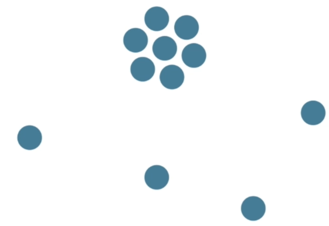
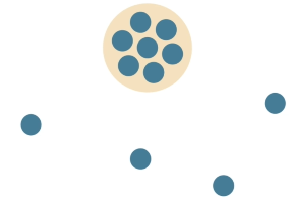
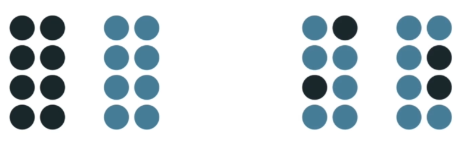
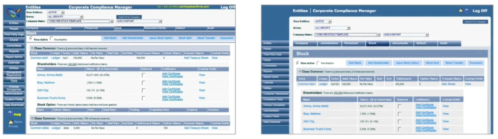
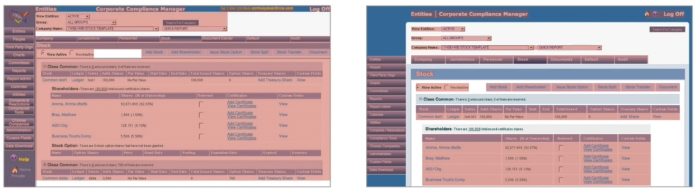

Jump to a section
20 · Proximity - Showing and Communicating Visual Relationships
Refined 15 October 2026 from the supplied Joe Natoli course notes. Original wording and captures remain preserved.
Core principle
Closer items tend to be perceived as related. Larger gaps can separate different tasks or information groups.
Application to game tools
Keep a label, its input and its validation message together; separate global actions from per-item controls.
Assessment and qualification
Proximity is a strong cue, not a universal winner over every other cue.
Try it
Does the nearest action affect that group or something elsewhere?
Source: 20 Proximity - Showing and Communicating Visual Relationships.md
Study detail and teaching translation
Distance suggests association: nearby items tend to read as a group, and larger gaps can signal a transition to another group.
Apply proximity to the relationship being communicated. A validation message should be clearly associated with the affected field; a global action should not appear to affect only its nearest row.
Teaching adaptation: compare within-group gaps with between-group gaps. Use alignment and labels to reinforce relationships where proximity alone is ambiguous.
Original captures




